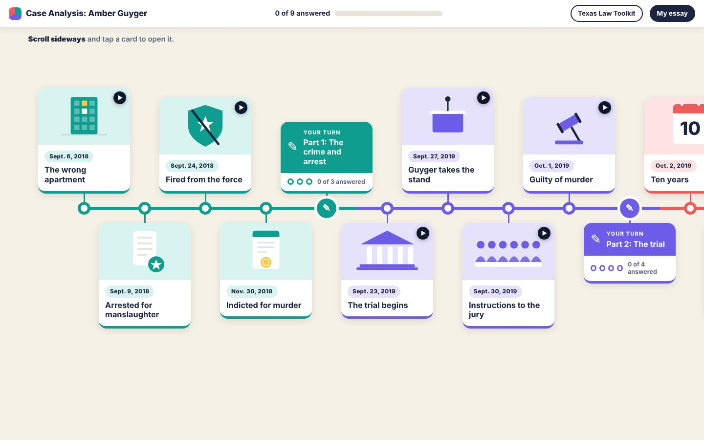
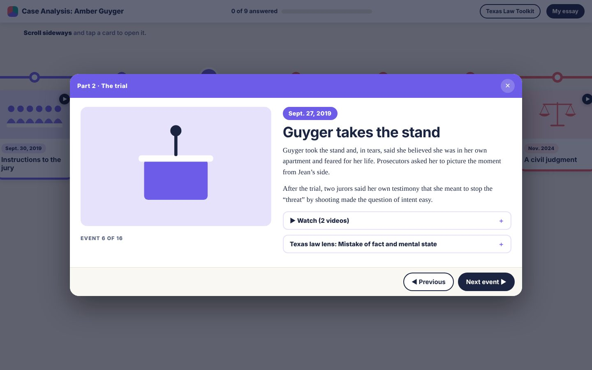
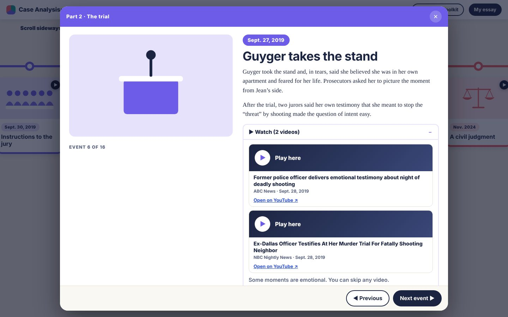
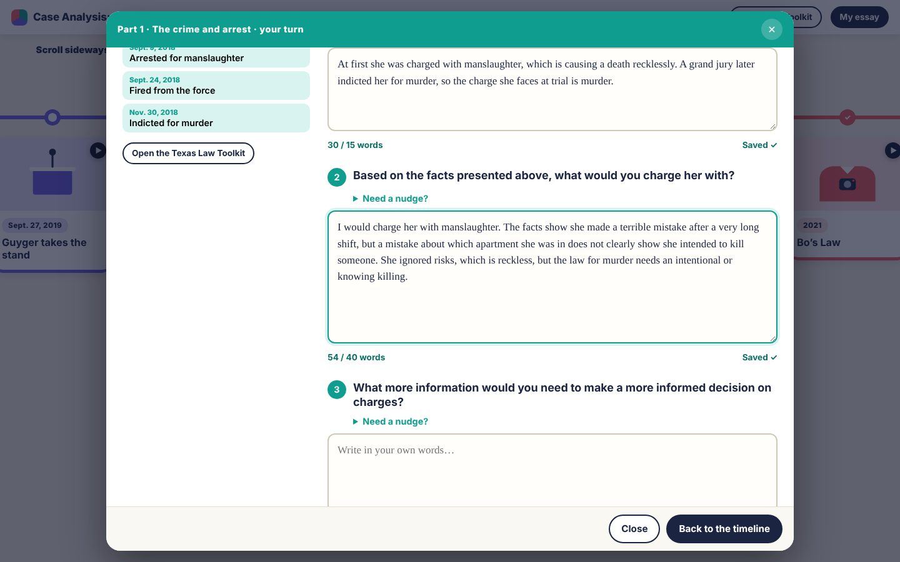
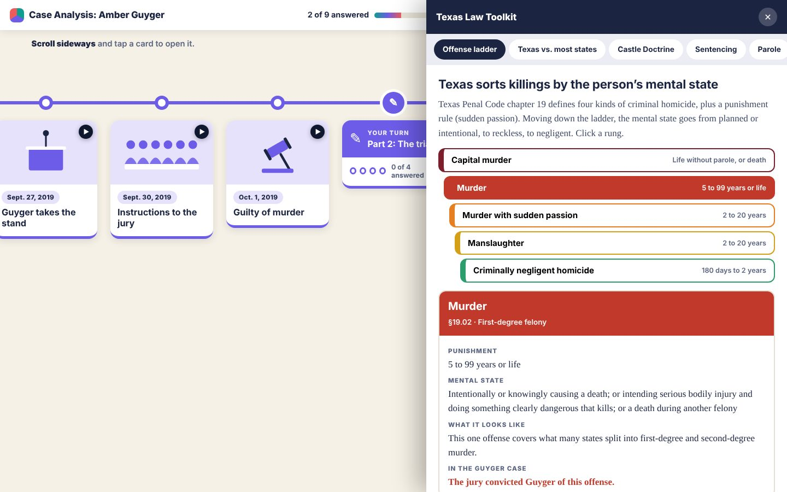
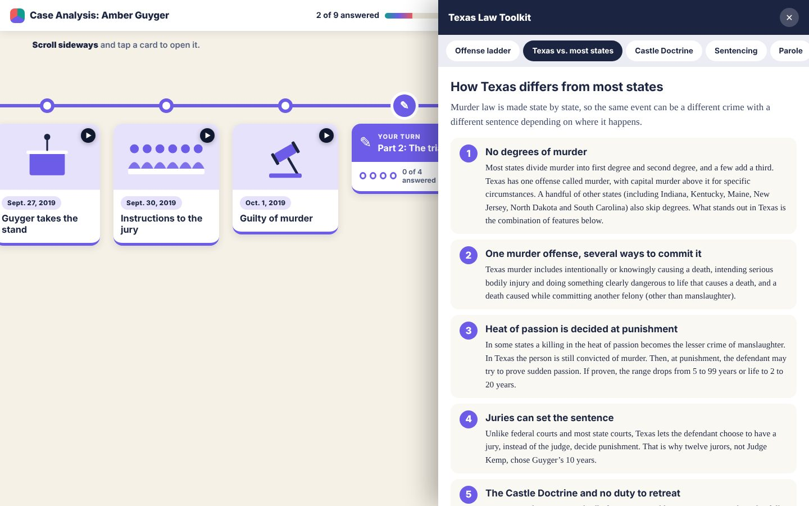
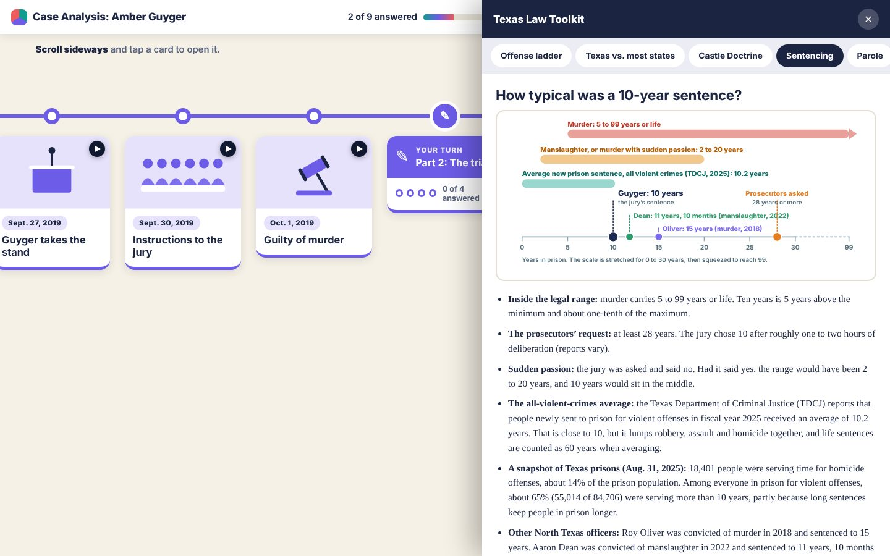
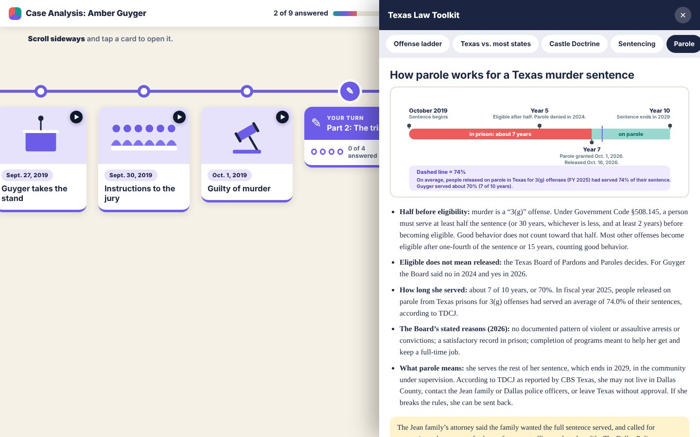
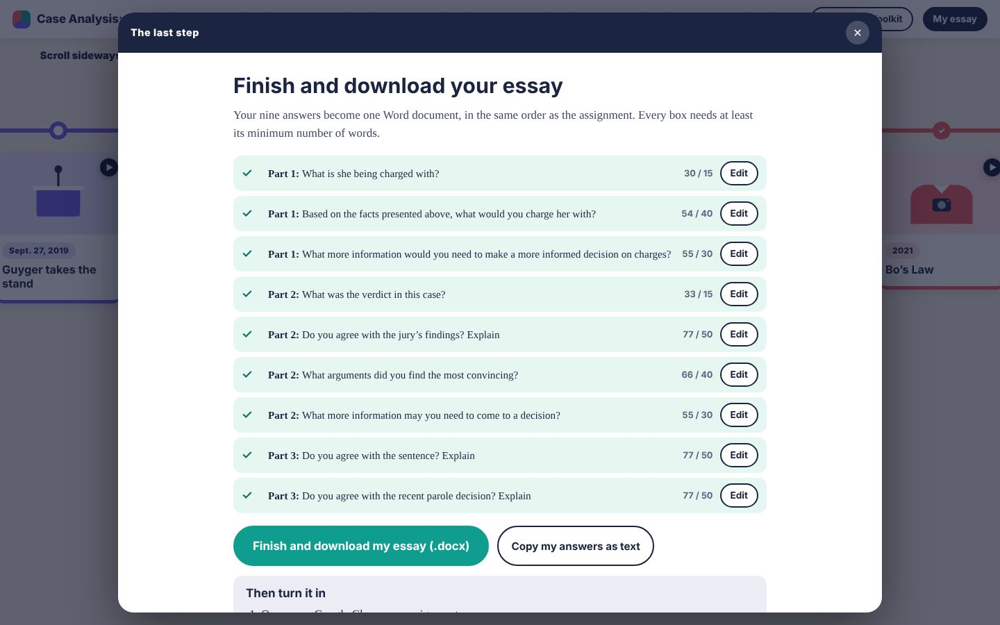
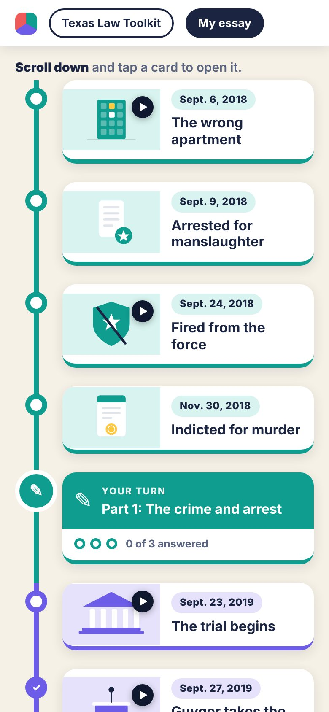

Case Analysis: Amber Guyger, screenshots
Back to the site
 The cover
The cover
The timeline: one row, small cards, a play mark where there are videos
An event slide starts with just the story
Watch and Texas law lens open when you want them
The writing panel
Toolkit: the Texas offense ladder
Toolkit: Texas vs. most states
Toolkit: how typical was 10 years?
Toolkit: how parole works
The finish checklist
On a phone